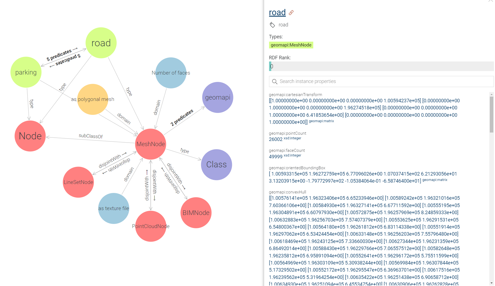

geomapi.nodes.meshnode
MeshNode is the Node class that governs the data and metadata of mesh data (Open3D, Trimesh).
This node builds upon the Open3D and Trimesh API for the geometry definitions.
- class geomapi.nodes.meshnode.MeshNode(subject: URIRef | None = None, graph: Graph | None = None, graphPath: Path | None = None, name: str | None = None, path: Path | None = None, timestamp: str | None = None, resource=None, cartesianTransform: ndarray | None = None, orientedBoundingBox: open3d.geometry.OrientedBoundingBox | None = None, convexHull: open3d.geometry.TriangleMesh | None = None, loadResource: bool = False, **kwargs)
Bases:
Node- __init__(subject: URIRef | None = None, graph: Graph | None = None, graphPath: Path | None = None, name: str | None = None, path: Path | None = None, timestamp: str | None = None, resource=None, cartesianTransform: ndarray | None = None, orientedBoundingBox: open3d.geometry.OrientedBoundingBox | None = None, convexHull: open3d.geometry.TriangleMesh | None = None, loadResource: bool = False, **kwargs)
Creates a MeshNode. Overloaded function.
This Node can be initialised from one or more of the inputs below. By default, no data is imported in the Node to speed up processing. If you also want the data, call node.get_resource() or set getResource() to True.
- Args:
graph (RDFlib Graph) : Graph with a single subject (if multiple subjects are present, only the first will be used to initialise the Node)
graphPath (str) : Graph file path with a single subject (if multiple subjects are present, only the first will be used to initialise the Node)
path (Path) : Path to mesh .obj or .ply file (data is not automatically loaded)
resource (o3d.geometry.TriangleMesh) : Open3D Triangle mesh data from trimesh or open3d
getResource (bool, optional= False) : If True, the node will search for its physical resource on drive
- Returns:
MeshNode : A MeshNode with metadata
- property pointCount
- property faceCount
- property resource
The resource (mesh, image, etc.) of the node. If no resource is present, you can use get_resource(), to load the resource from a path or search it through the name and graphpath.
- Inputs:
self.path
self.name
self.graphPath
- load_resource() open3d.geometry.TriangleMesh
Load the resource from the path.
- Returns:
o3d.geometry.TriangleMesh or None
- save_resource(directory: str = None, extension: str = '.ply') bool
Export the resource of the Node.
- Args:
directory (str, optional) : directory folder to store the data.
extension (str, optional) : file extension. Defaults to ‘.ply’.
- Raises:
ValueError: Unsuitable extension. Please check permitted extension types in the ontology.
- Returns:
bool: return True if export was successful
- show(inline=False)
Creates a visualization of the resource (if loaded)